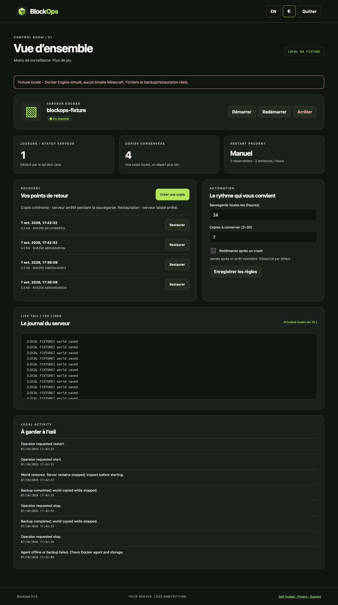

BLOCKOPS COMMUNITY · DÉMONSTRATION STATIQUE
Votre serveur. L’esprit libre.
Cette capture utilise une fixture simulée. Les boutons de l’image ne sont pas interactifs ; aucun serveur Minecraft réel n’est connecté.
Présentation et limites · Plan de validation Java réel
